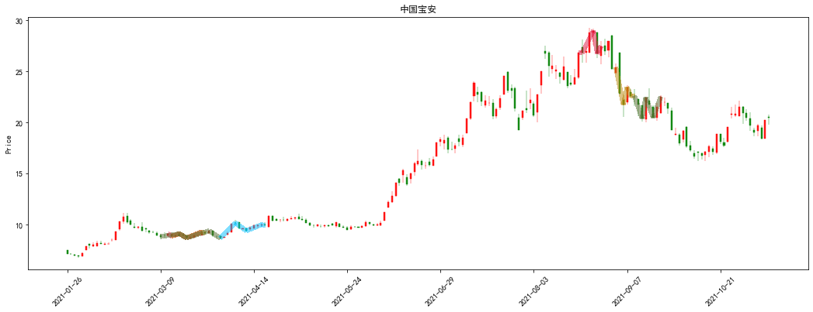
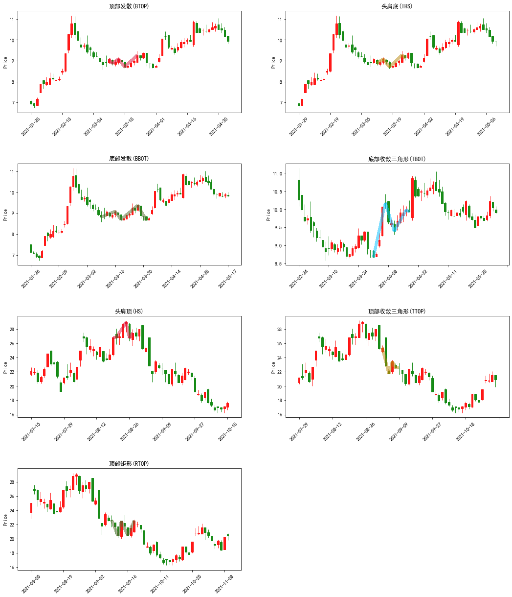
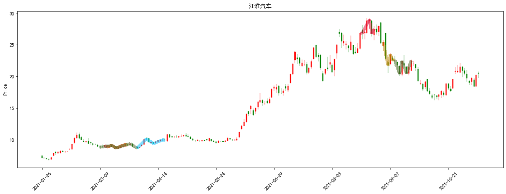
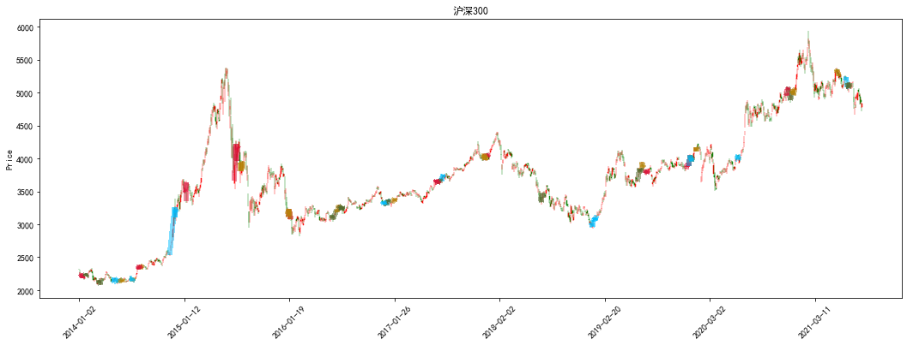
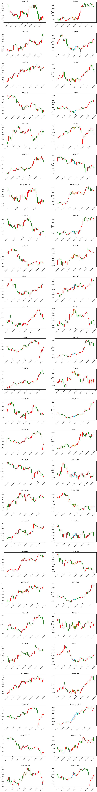
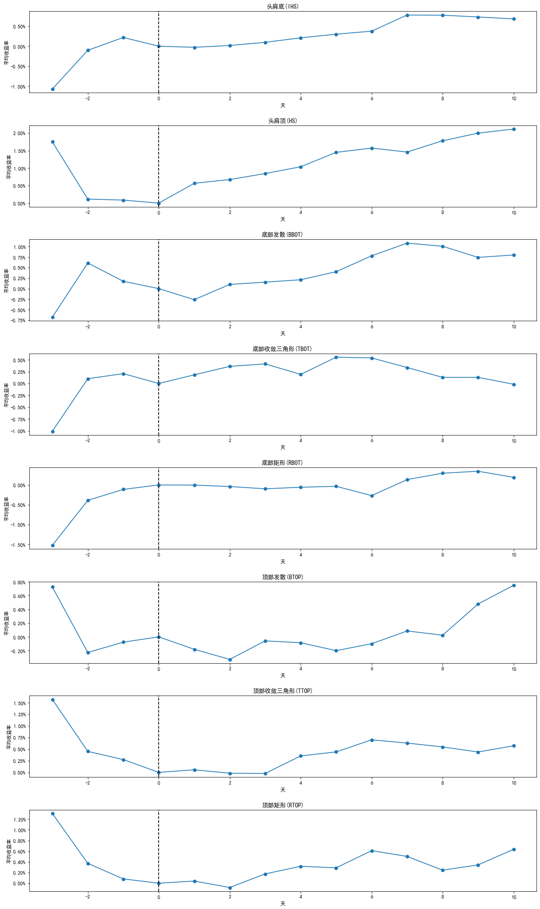

# 引入库
from technical_analysis_patterns import (rolling_patterns2pool,plot_patterns_chart)
from typing import (List, Tuple, Dict, Callable, Union)
from tqdm.notebook import tqdm
import json
from jqdatasdk import (auth,get_price,get_trade_days,finance,query,get_industries)
import pandas as pd
import numpy as np
import empyrical as ep
import seaborn as sns
import matplotlib as mpl
import mplfinance as mpf
import matplotlib.pyplot as plt
plt.rcParams['font.sans-serif'] = ['SimHei'] #用来正常显示中文标签
plt.rcParams['axes.unicode_minus'] = False #用来正常显示负号
auth('','')
D:\anaconda3\lib\site-packages\empyrical\utils.py:32: UserWarning: Unable to import pandas_datareader. Suppressing import error and continuing. All data reading functionality will raise errors; but has been deprecated and will be removed in a later version.
warnings.warn(msg)
auth success
论文介绍#
《Foundations of Technical Analysis》
Andrew W Lo、Harry Mamaysky和王江提出了一种系统化和自动化的方法，使用非参数核回归方法来进行模式识别，并将该方法应用于1962年至 1996 年的美股数据，以评估技术分析的有效性。通过将股票收益的无条件经验分布与条件分布（给定特定的技术指标，例如：头肩底形态、双底形态）作比较，发现在 31 年的样本期 间内，部分技术指标确实提供了有用的信息，具有实用价值。 与基本面分析不同，技术分析一直以来饱受争议。然而一些学术研究表明，技术分析能从市场价格中提取 有用的信息。例如，Lo and MacKinlay (1988, 1999)证实了每周的美股指数并非随机游走，过去的价格可以在某种 程度上预测未来收益。技术分析和传统金融工程的一个重要区别在于，技术分析主要通过观察图表进行，而量化金融则依赖于相对完善的数值法。因此，技术分析利用几何工具和形态识别，而量化金融运用数学分析和概率统计。随着近年来金融工程、计算机技术和数值算法等领域的突破，金融工程可以逐步取代不那么严谨的技术分析。技术分析虽饱受质疑却仍能占据一席之地，归功于其视觉分析模式更贴近直观认知，而且在过去，要进行技术分析，首先要认识到价格过程是非线性的，且包含一定的规律和模式。为了定量地捕捉这种规 律，我们首先假定价格过程尚未有严格的算法取代传统的技术分析，如今，成熟的统计算法能够取代传统的几何画图，让技术分析继续以 更新、更严谨的方式服务投资者，同时金融工程领域在分析范式上也得到了丰富。
形态识别算法#
核估计方法#
假定价格过程\({P_t}\)有如下表达形式:
其中\(X_t\)是状态变量,\(m(X_t)\)是任意固定但位置的非线性函数,\(\epsilon\)为白噪声。
为了识别模式,我们令状态变量等于时间\(X_{t}=t\),此时,需要用一个光滑函数\(\hat{m}(.)\).近似价格过程为了与核回归估计文献中的符号保持一致，我们仍将状态变量记为\(X_{t}\)。
\(\hat{m}(.)\),还需要一个形态识别的算法,以自动识别指数指标。一旦有了算法,就可以应用于不同时段的资产价格,从而评估不同技术指标的有效性。
平滑估计量#
\(\hat{m}=\frac{1}{T}\sum^{T}_{t=1}w_{t}(x)P_{t}\) 其中离x较近的\(X_t\)对应的\(P_t\)拥有较大的权重\(w_{t}(x)\)。对于距离的选择，太宽会导致估计量过于平滑而无法显示出\(m(⋅)\)真正的特性，太窄又会导致估计量的波动较大，无法排除噪声的影响。因此需要通过选择合适的权重\(w_{t}(x)\)来平衡以上两点。
核回归#
对于核回归估计量，权重\(w_{t}(x)\)是通过核密度函数\(K(x)\)构造的:
我们可以通过一个参数\(h \gt 0\)来调整核函数的离散程度,令:
然后定义如下权重系数:
其中,平滑系数h也称为带宽,h越大,用于计算加权均值的样本窗口宽度越大。带宽的选取对于任一局部平均方法都很关键，将在下一小节中进行详细讨论。
将上式代入,得到\(m(x)\)的估计\(\hat{m}_{h}(x)\),称为Nadaraya-Waston核估计:
在特定条件下可以证明，当样本量增大，\(\hat{m}_{h}(x)\)以多种方式渐进收敛于\(m(x)\)。该收敛性质对许多核函数都成立，本文将使用最常用的高斯核：
带宽(bw)的选择#
通过最小化如下函数来选取合适的h:
其中:
\(\hat{m}_{h,t}=\frac{1}{T}\sum^{T}_{t=1}w_{r,h}Y_{r}\)
估计量\(\hat{m}_{h,t}\)是剔除第t个观测得到的估计量，而上式是所有\(\hat{m}_{h,t}\)的均方误差。对给定的带宽h，CV(h)衡量了核回归估计量的拟合能力。通过最小化CV(h),我们得到的估计量具有一些统计上的优良性质，例如最小渐进均方误差。但由此得到的带宽往往偏大，即基于最小化CV(h) 的\(\hat{m}(⋅)\) 给远距离样本过多的权重，导致过渡平滑，丢失了局部信息。经过不断的试验，我们发现最优带宽应取0.3*\(h^{*}\),其中\(h^{*}=\mathop{argmin}_{h}CV(X)\)
形态识别算法#
头肩形态（头肩顶和头肩底）
发散形态（顶部发散和底部发散） $\( BTOP = \begin{cases} E_1\ is\ maximum, \\ E_1 < E_3 <E_5, \\ E_2>E_4,\\ \end{cases} \)$
三角形
矩形
形态识别测试#
中国宝安#
data1 = get_price('000009.XSHE', start_date='2021-01-21', end_date='2021-12-31',
fields=['open', 'close', 'low', 'high'], panel=False)
patterns_record1 = rolling_patterns2pool(data1['close'],n=35)
plot_patterns_chart(data1,patterns_record1,True,False)
plt.title('中国宝安')
plot_patterns_chart(data1,patterns_record1,True,True);


江淮汽车#
data2 = get_price('600418.XSHG', start_date='2021-01-21', end_date='2021-12-31',
fields=['open', 'close', 'low', 'high'], panel=False)
patterns_record2 = rolling_patterns2pool(data1['close'],n=35)
plot_patterns_chart(data1,patterns_record2,True,False)
plt.title('江淮汽车')
plot_patterns_chart(data1,patterns_record2,True,True);

沪深300#
hs300 = get_price('000300.XSHG', start_date='2014-01-01', end_date='2021-12-31',
fields=['open', 'close', 'low', 'high'], panel=False)
# 这里周期周期较长 加入reset_window设置字典更新频率
patterns_record3 = rolling_patterns2pool(hs300['close'],n=35,reset_window=120)
plot_patterns_chart(hs300,patterns_record3,True,False)
plt.title('沪深300')
plot_patterns_chart(hs300,patterns_record3,True,True);
D:\anaconda3\lib\site-packages\mplfinance\_arg_validators.py:35: UserWarning:
=================================================================
WARNING: YOU ARE PLOTTING SO MUCH DATA THAT IT MAY NOT BE
POSSIBLE TO SEE DETAILS (Candles, Ohlc-Bars, Etc.)
For more information see:
- https://github.com/matplotlib/mplfinance/wiki/Plotting-Too-Much-Data
TO SILENCE THIS WARNING, set `type='line'` in `mpf.plot()`
OR set kwarg `warn_too_much_data=N` where N is an integer
LARGER than the number of data points you want to plot.
================================================================
warnings.warn('\n\n ================================================================= '+


申万一级行业形态识别情况#
def patterns_res2json(dic: Dict) -> str:
"""将结果转为json
Args:
dic (Dict): 结果字典
Returns:
str
"""
def json_serial(obj):
"""JSON serializer for objects not serializable by default json code"""
if isinstance(obj, np.datetime64):
return pd.to_datetime(obj).strftime('%Y-%m-%d')
if isinstance(obj, np.ndarray):
return list(map(lambda x: pd.to_datetime(x).strftime('%Y-%m-%d'), obj.tolist()))
return json.dumps(dic, default=json_serial, ensure_ascii=False)
def pretreatment_events(factor: pd.DataFrame, returns: pd.DataFrame, before: int, after: int) -> pd.DataFrame:
"""预处理事件,将其拉到同一时间
Args:
factor (pd.DataFrame): MuliIndex level0-date level1-asset
returns (pd.DataFrame): index-datetime columns-asset
before (int): 事件前N日
after (int): 事件后N日
Returns:
pd.DataFrame: [description]
"""
all_returns = []
for timestamp, df in factor.groupby(level='date'):
equities = df.index.get_level_values('asset')
try:
day_zero_index = returns.index.get_loc(timestamp)
except KeyError:
continue
starting_index = max(day_zero_index - before, 0)
ending_index = min(day_zero_index + after + 1,
len(returns.index))
equities_slice = set(equities)
series = returns.loc[returns.index[starting_index:ending_index],
equities_slice]
series.index = range(starting_index - day_zero_index,
ending_index - day_zero_index)
all_returns.append(series)
return pd.concat(all_returns, axis=1)
def get_event_cumreturns(pretreatment_events: pd.DataFrame) -> pd.DataFrame:
"""以事件当日为基准的累计收益计算
Args:
pretreatment_events (pd.DataFrame): index-事件前后日 columns-asset
Returns:
pd.DataFrame
"""
df = pd.DataFrame(index=pretreatment_events.index,
columns=pretreatment_events.columns)
df.loc[:0] = pretreatment_events.loc[:0] / pretreatment_events.loc[0] - 1
df.loc[1:] = pretreatment_events.loc[0:] / pretreatment_events.loc[0] - 1
return df
def get_industry_price(codes: Union[str, List], start: str, end: str) -> pd.DataFrame:
"""获取行业指数日度数据. 限制获取条数Limit=4000
Args:
codes (Union[str,List]): 行业指数代码
start (str): 起始日
end (str): 结束日
Returns:
pd.DataFrame: 日度数据
"""
def query_func(code: str, start: str, end: str) -> pd.Series:
return finance.run_query(query(finance.SW1_DAILY_PRICE).filter(finance.SW1_DAILY_PRICE.code == code,
finance.SW1_DAILY_PRICE.date >= start,
finance.SW1_DAILY_PRICE.date <= end))
if isinstance(codes, str):
codes = [codes]
return pd.concat((query_func(code, start, end) for code in codes))
def calc_events_ret(ser: pd.Series, pricing: pd.DataFrame, before: int = 3, end: int = 10, group: bool = True) -> Union[pd.Series, pd.DataFrame]:
""" 计算形态识别前累计收益率情况
Args:
ser (pd.Series): _description_
pricing (pd.DataFrame): 价格数据 index-date columns-指数
before (int, optional): 识别前N日. Defaults to 3.
end (int, optional): 识别后N日. Defaults to 10.
group (bool, optional): 是否分组. Defaults to True.
Returns:
Union[pd.Series, pd.DataFrame]
"""
events = pretreatment_events(ser, pricing, before, end)
rets = get_event_cumreturns(events)
if group:
return rets.mean(axis=1)
else:
return rets
def get_win_rate(df: pd.DataFrame) -> pd.DataFrame:
"""计算胜率
Args:
df (pd.DataFrame): index-days columns
Returns:
pd.DataFrame
"""
return df.apply(lambda x: np.sum(np.where(x > 0, 1, 0)) / x.count(), axis=1)
def get_pl(df:pd.DataFrame)->pd.DataFrame:
"""计算盈亏比
Returns:
pd.DataFrame
"""
return df.apply(lambda x:x[x>0].mean() / x[x<0].mean(),axis=1)
def plot_events_ret(ser: pd.Series, title: str = '', ax=None):
"""绘制事件收益率图
Args:
ser (pd.Series): 收益率序列
ax (_type_, optional):Defaults to None.
Returns:
ax
"""
if ax is None:
fig, ax = plt.figure(figsize=(18, 4))
line_ax = ser.plot(ax=ax, marker='o', title=title)
line_ax.yaxis.set_major_formatter(
mpl.ticker.FuncFormatter(lambda x, pos: '%.2f%%' % (x * 100)))
line_ax.set_xlabel('天')
line_ax.set_ylabel('平均收益率')
ax.axvline(0, ls='--', color='black')
return ax
# 获取申万一级行业列表
indstries_frame = get_industries(name='sw_l1', date=None)
industry_price = get_industry_price(indstries_frame.index.tolist(),'2014-01-01','2022-02-18')
# 数据储存
industry_price.to_csv('sw_lv1.csv')
# 读取申万一级行业数据
industry_price = pd.read_csv('sw_lv1.csv', index_col=[
'name', 'date'], parse_dates=True).drop(columns='Unnamed: 0')
industry_price.head()
# time 2:14:46
## 形态识别数量受窗口期 及 更新字典的窗口 大小影响
dic = {} # 储存形态识别结果
for name,df in tqdm(industry_price.groupby(level='name')):
if len(df) > 120:
dic[name] = rolling_patterns2pool(df.loc[name,'close'],35,reset_window = 120)._asdict()
# 将结果储存为json
res_json =patterns_res2json(dic)
# 数据储存
with open('res_json.json','w',encoding='utf-8') as file:
json.dump(res_json,file)
# 读取 形态识别后的文件
with open('res_json.json','r',encoding='utf-8') as file:
res_json = json.load(file)
# 获取交易日历
trade_calendar = get_trade_days('2013-06-01','2022-02-21')
idx = pd.to_datetime(trade_calendar)
row_data = [] # 获取形态识别时的时点
res_dic = json.loads(res_json) # json转为字典
for code,res1 in res_dic.items():
for pattern_name,point_tuple in res1['patterns'].items():
for p1,p2 in point_tuple:
watch_date = idx.get_loc(p2) + 3 # 模拟三天后识别形态
row_data.append([code,pattern_name,idx[watch_date]])
# 转为frame格式
stats_df = pd.DataFrame(row_data,columns=['指数','形态','时间'])
stats_df['value'] = 1
factor_df = pd.pivot_table(stats_df,index=['时间','指数'],columns=['形态'],values='value')
factor_df = factor_df.sort_index()
factor_df.index.names = ['date','asset']
pricing = pd.pivot_table(industry_price.reset_index(),
index='date', columns='name', values='close')
形态识别后前后平均收益情况#
# TODO:收益减去指数自身 评价其超额情况 否则无法真实评价
group_ret = factor_df.groupby(level=0, axis=1).apply(
lambda x: calc_events_ret(x.dropna(), pricing))
size = group_ret.shape[1]
fig, axes = plt.subplots(size, figsize=(18, 4 * size))
axes = axes.flatten()
for ax, (name, ser) in zip(axes, group_ret.items()):
plot_events_ret(ser, name, ax)
plt.subplots_adjust(hspace=0.4)

# 计算胜率
evet_ret = factor_df.groupby(level=0, axis=1).apply(
lambda x: calc_events_ret(x.dropna(), pricing, group=False))
grouped = evet_ret.groupby(level=[0, 1], axis=1)
# 计算胜率
win_ratio = grouped.apply(get_win_rate).loc[[3, 5, 10]].T.swaplevel().sort_index()
# 计算盈亏比
pl_df = grouped.apply(get_pl).loc[[3, 5, 10]].T.swaplevel().sort_index()
win_ratio.columns = pd.MultiIndex.from_tuples([('胜率',3),('胜率',5),('胜率',10)])
pl_df.columns = pd.MultiIndex.from_tuples([('盈亏比',3),('盈亏比',5),('盈亏比',10)])
pattern_count = factor_df.groupby(level=1).sum().stack()
stats = pd.concat((win_ratio,pl_df),axis=1)
stats[('识别次数','All')] = pattern_count
stats
| 胜率 | 盈亏比 | 识别次数 | ||||||
|---|---|---|---|---|---|---|---|---|
| 3 | 5 | 10 | 3 | 5 | 10 | All | ||
| name | 形态 | |||||||
| 交通运输 | 头肩底(IHS) | 0.466667 | 0.733333 | 0.533333 | -0.674405 | -1.107140 | -2.052513 | 15.0 |
| 头肩顶(HS) | 0.571429 | 0.714286 | 0.714286 | -2.367297 | -1.834801 | -3.755114 | 14.0 | |
| 底部发散(BBOT) | 0.666667 | 0.666667 | 0.333333 | -2.813960 | -1.454408 | -1.197536 | 3.0 | |
| 底部收敛三角形(TBOT) | 0.800000 | 0.800000 | 0.400000 | -0.554821 | -0.557955 | -1.508219 | 5.0 | |
| 底部矩形(RBOT) | 0.571429 | 0.428571 | 0.571429 | -1.078427 | -2.554149 | -0.972385 | 7.0 | |
| ... | ... | ... | ... | ... | ... | ... | ... | ... |
| 餐饮旅游 | 底部收敛三角形(TBOT) | 0.666667 | 1.000000 | 1.000000 | -4.359365 | NaN | NaN | 3.0 |
| 底部矩形(RBOT) | 0.500000 | 0.500000 | 0.500000 | -1.089792 | -1.087327 | -1.910532 | 2.0 | |
| 顶部发散(BTOP) | 0.500000 | 0.500000 | 0.750000 | -1.290124 | -1.713131 | -2.675643 | 4.0 | |
| 顶部收敛三角形(TTOP) | 1.000000 | 1.000000 | 1.000000 | NaN | NaN | NaN | 1.0 | |
| 顶部矩形(RTOP) | 0.500000 | 0.500000 | 0.500000 | -0.401420 | -0.755532 | -3.639606 | 4.0 | |
224 rows × 7 columns